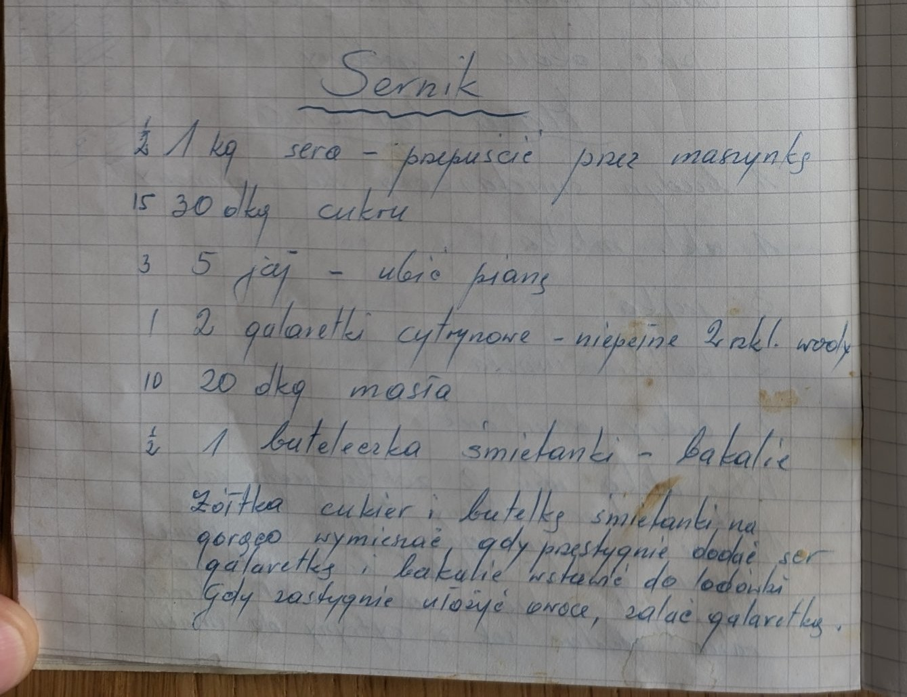
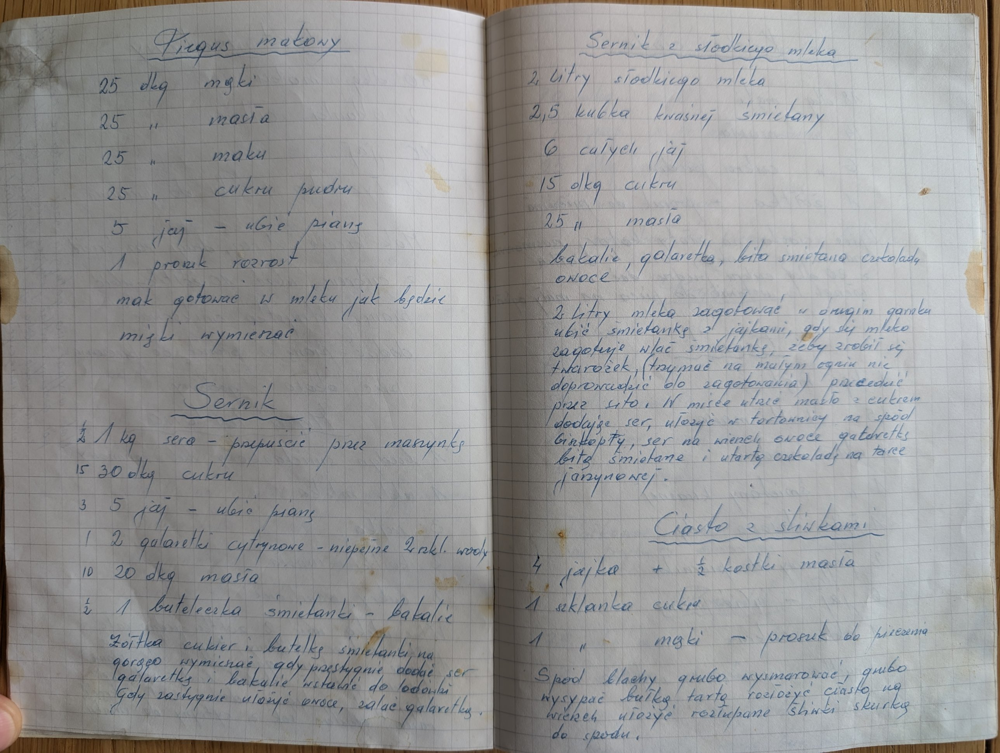

Sernik


Składniki
- 1 kg sera
- 30 dkg cukru
- 5 jaj
- 2 galaretki cytrynowe (niepełne 2 szkl. wody)
- 20 dkg masła
- 1 buteleczka śmietanki
- bakalie
- owoce
Przygotowanie
- Ser przepuścić przez maszynkę.
- Z jaj ubić pianę.
- Żółtka, cukier i butelkę śmietanki na gorąco wymieszać.
- Gdy przestygnie, dodać ser, galaretkę i bakalie, wstawić do lodówki.
- Gdy zastygnie, ułożyć owoce, zalać galaretką.
Oryginalny zapis
Sernik (½) 1 kg sera – przepuścić przez maszynkę (15) 30 dkg cukru (3) 5 jaj – ubić pianę (1) 2 galaretki cytrynowe – niepełne 2 szkl. wody (10) 20 dkg masła (½) 1 buteleczka śmietanki – bakalie Żółtka cukier i butelkę śmietanki na gorąco wymieszać, gdy przestygnie dodać ser galaretkę i bakalie wstawić do lodówki Gdy zastygnie ułożyć owoce, zalać galaretką.